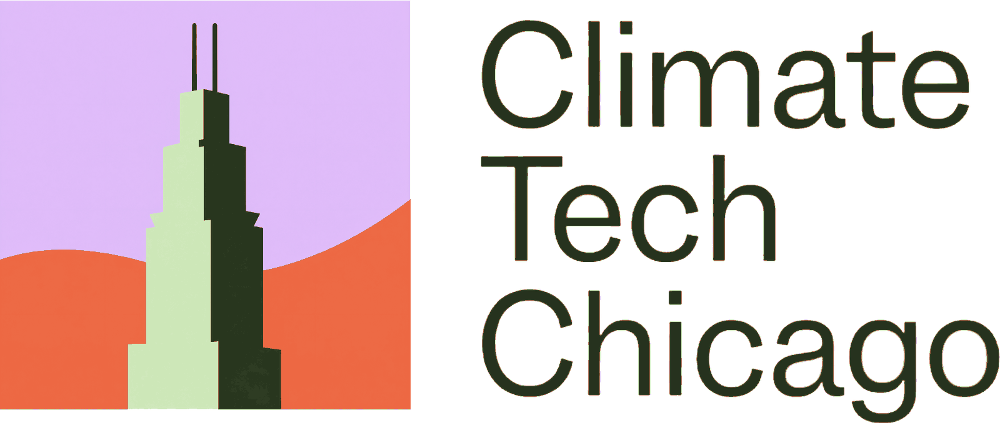
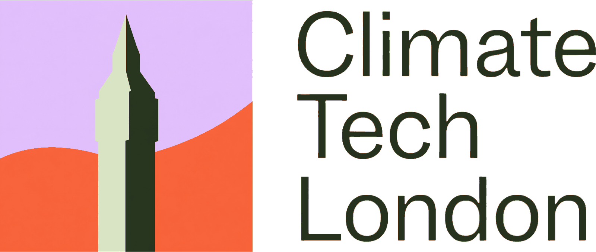

Everything you need to get a chapter off the ground: a logo that belongs to the Climate Tech Cities family, and a weekly events newsletter you can actually keep up with. Written for a volunteer with a day job, not a marketing team.
A chapter becomes real when people can recognise it and hear from it. That is a logo and a newsletter. Do them in that order: the logo takes an afternoon and needs sign-off, the newsletter is the thing you keep doing every week.
Generate ten concepts in the CTC house style using a prompt built for it, pick one, and confirm it with the CTC founders before you use it anywhere.
You and ChatGPT Part twoThree Claude skills find the events, build the spreadsheet, and lay out the issue. You cut the list, write a short note, and send.
You and ClaudeType it once and every prompt on this page fills in, ready to copy. Nothing is saved: this page stores nothing and has no connection to your Claude or ChatGPT account.
Every chapter logo is the same lockup: a square icon on the left, and Climate Tech [your city] stacked on three lines to the right. Only the building silhouette changes from city to city. That consistency is what makes ten chapters look like one organisation.


Same lavender field, same orange horizon, same two greens, same wordmark, same proportions. Chicago gets the Willis Tower, London gets the clock tower, New York gets its own tower. Only the silhouette moves. That is the whole system, and matching it is the entire job.
This is the house prompt, with your city already filled in. Paste it into ChatGPT and ask for images.
Attach these to the same ChatGPT message. The prompt describes the house style in words, but the references are what actually hold it: without them you get something in the right colours and the wrong proportions.
Attach these four. Between them they pin down the proportions, the palette and the range of silhouettes.
Optional, and useful if the icon keeps coming back too busy. These are the icon squares on their own, with the wordmark cropped away:
The prompt asks for up to ten. Look for a silhouette a local would name in a second, built from a handful of flat planes. If everything comes back too detailed, say "simpler, fewer planes, more abstract" and run it again. Detail is the usual failure, not the palette.
Send your chosen concept to the founders and wait for a yes. This is the one step you cannot skip: the logo goes on the newsletter, the Luma calendar and everything else the chapter publishes, and changing it later means changing it everywhere.
A weekly climate events newsletter for your city, without the data entry. Three Claude skills find the events, build the spreadsheet, and lay out the issue. You cut the list, write a short note, and send. About two hours a week once it is running.
Two are Claude doing the tedious half. Two are you doing the half that only a person can do. Everything runs inside your own Claude account.
In words: Claude builds your source map once, then harvests events every Thursday. You cut the sheet on Friday. Claude assembles the issue on Monday, and you write the words and send on Tuesday.
Claude sweeps every source in your registry and hands back a spreadsheet of everything happening.
Claude FridayYou open the sheet and delete rows. This is the decision that sets the shape of the issue.
You MondayClaude lays out the whole issue. You fill the three gaps it deliberately leaves blank.
Both TuesdayCheck it over, paste into Substack, read it once end to end, and hit send.
YouYou need a paid Claude account. You do not need to know how to code. Budget about two hours, most of which is Claude researching your city in step 6.
In Claude, open Settings, then Capabilities, then Skills, and upload the three .skill files. Turn on code execution in the same panel, because the skills use it to build your spreadsheet and your finished document.
Search for "Claude for Chrome", install it, and sign in with the same account. Some event sites hide their listings from simple requests, so Claude reads those pages through a real browser: yours.
Open city-config-template.docx and fill it in: chapter name, timezone, what counts as local, who signs the newsletter, and your footer. Ten minutes. Save it as city-config.docx.
Make a new project, something like "Boston Newsletter". Then upload your city-config.docx to that project as a context file, so every conversation inside it can see the file. This is the step that matters: all three skills read your city settings from there, so you never have to re-explain your timezone, your scope rule, or your sign-off. Every week from now on happens inside this project.
Before you leave setup, prove it to yourself. Paste this into your new project:
Which newsletter skills do you have available?
Your standing list of everywhere events get announced in your city. This is the most valuable hour you will spend, because every future harvest only finds what this list points at. Run it now, then again every three months, because calendars die quietly.
You probably already check five or ten calendars by hand. Those are the best rows in the registry, because a real person has already vouched for them. Claude lays out three ways to go and waits for your answer.
Paste links straight into your first message and Claude takes that as your answer rather than making you pick from a menu.
Whichever route you take, Claude researches Luma calendars, Eventbrite organizers, universities, incubators, city government, professional groups and arts venues, and puts every source through the same five checks: it loads, it has run something in the last 90 days, it repeats on a pattern, it is a real and genuinely climate-relevant organization, and its URL is stable. Your own links get checked too. If one fails, Claude names the check it failed instead of dropping it quietly, so you can decide whether to keep it anyway.
Read what it gives you. You live there and Claude does not, so if it missed the meetup everyone goes to, say so and have it added. The registry notes whether each row came from you or from research, which is what makes the quarterly refresh easy: a row you added that has gone quiet is worth asking about, a researched one can just go.
Paste the prompt into your project. Claude sweeps every source in your registry and hands back a spreadsheet. It collects everything without filtering, on purpose: collecting and judging are separate jobs, and mixing them turns a short task into a long one.
Open yesterday's spreadsheet and delete rows. There is no prompt for this one, because it is judgment. How many events end up in the newsletter is decided here, and there is no target number: a good week is however many good events your city actually has.
Paste the prompt and attach your edited spreadsheet. Claude reads the sheet, asks you three questions, and then builds the issue as a Word document and an HTML page, both formatted for Substack.
It will not start building until you answer. Have these ready and Monday takes ten minutes instead of thirty.
Every link, emoji and day header already in place.
Claude builds these from your answers to the three questions and leaves what it cannot know as a scaffold with the gap marked in [square brackets]. Those gaps are yours, and the opening note is yours entirely.
A three thousand word issue contains about eighty words of human prose, and those eighty words are why anyone subscribes. Claude cannot know what the weather did to your city this week, how your last event went, or why your chapter is excited about Thursday. That is why it leaves the gaps instead of filling them.
A real New York issue, shortened to fit. The shading shows who wrote what.
Hi all,
Last week we pulled out our N95s once again as wildfire smoke subsumed the summer. The brown-orange skies, torrential rain, and tornado warnings have been stark reminders that climate change is here and now.
For such a global problem, we continually find hope and inspiration in local community. While the summer is a lot quieter, there's still plenty of ways to connect. Here are our picks for the week:
We've postponed Wednesday's Other Intelligence summit until later this year (too many people were out of town!) but are still looking forward to it in the Fall.
Til next week!
Alec, Sonam, and the Climate Tech Cities team
💡 New York Climate Exchange Climate Tech Fellowship
A six-month hybrid program combining expert-led curriculum, mentorship, and non-dilutive funding. Applications due August 1.
🌎 Climate Tech Cities and Streetlife Ventures Startup and Talent Platforms
Climate Tech Cities and Streetlife Ventures are launching new platforms to support climate founders, funders, and career transitioners. We can't wait to hear from you!
{kind=link}
{kind=link}
{kind=link}
{kind=link}
{kind=link}
{kind=link}